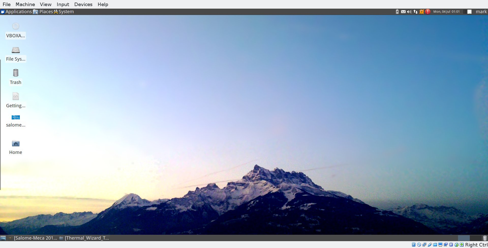
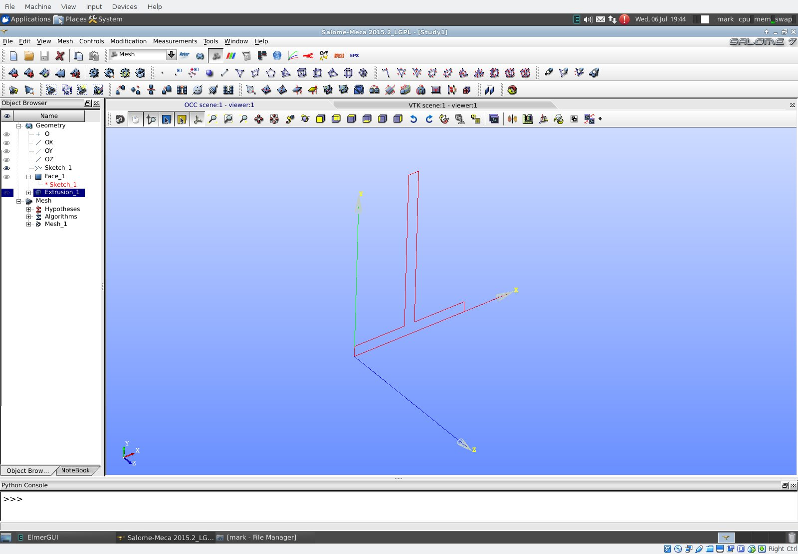
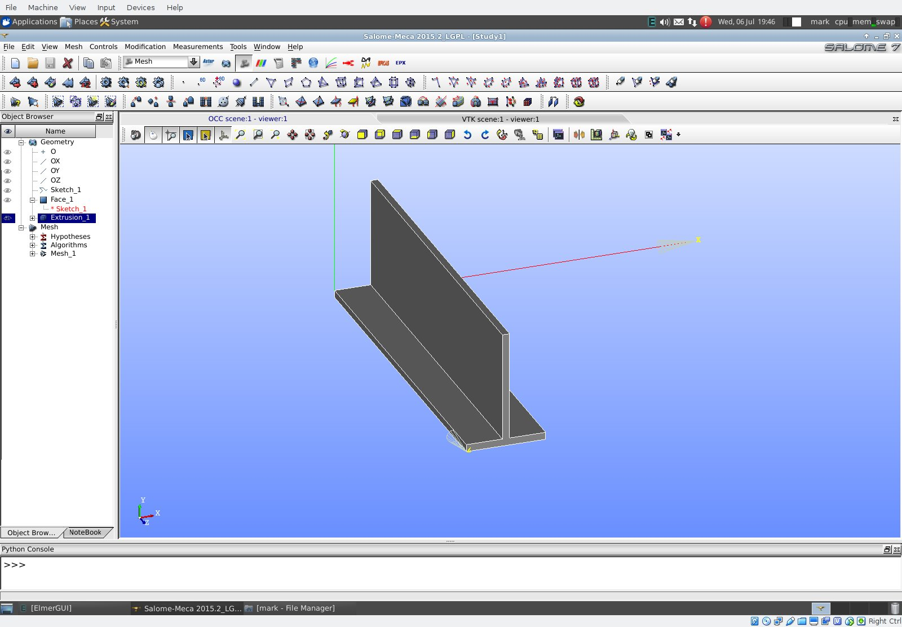
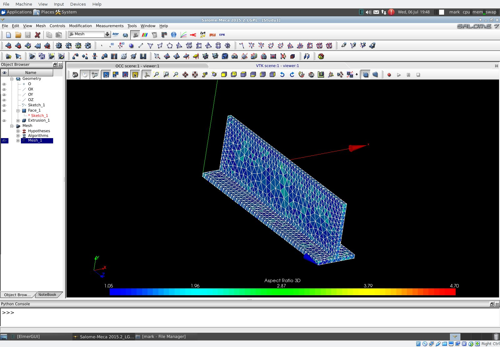

CAE Engineering Linux Distribution

CAE Engineering Linux distribution is an Ubuntu based Linux that is preloaded with many applications useful to engineers. It can be obtained from the website below:
CAE Engineering Linux Distribution
CAE Engineering Linux Distribution
CAE Engineering Linux Distribution - Salome Meca

The image above displays Salome Meca running under the CAE Linux Virtual Machine. Salome Meca has the capability for geometry generation, mesh generation, simulation and post processing by invoking the appropriate modules. It can be obtained from the website below:
Salome-Meca Binary Packages
Salome-Meca Binary Packages
CAE Engineering Linux Distribution - Salome Meca - 2d Plane Extrusion into 3D Shape

After creating a 2D shape and converting it into a face, the face is extruded into a 3D shape.
CAE Engineering Linux Distribution - Salome Meca - Mesh Generation from 3D Shape

A mesh is generated from the 3D shape. This mesh then serves as the input to ElmerGUI. Elmer is a scientific analysis program produced by CSC - IT CENTER FOR SCIENCE LTD. It can be obtained from the website below:
Elmer Multiphysical Simulation Software
Elmer Multiphysical Simulation Software